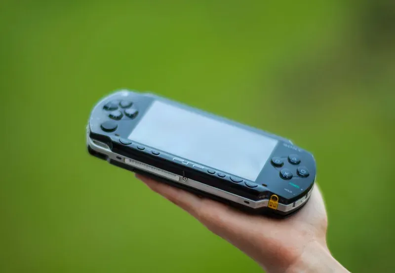

2004 年发布
PlayStation Portable (PSP)
索尼首款掌机 · 多媒体娱乐 · 怪物猎人P聚集地
8200万
全球销量
UMD
光盘介质
4.3寸
屏幕
¥19,800
首发价格
📖 历史与背景
2004年12月12日，索尼在日本发布首款掌机PlayStation Portable。PSP搭载了4.3寸480×272的16:9宽屏LCD、333MHz的MIPS R4000 CPU和专用的图形芯片，性能远超同时期的任天堂DS。
PSP最大的创新在于使用UMD（Universal Media Disc）——一种1.8GB的微型光盘，不仅可以装游戏，还可以放电影和音乐。索尼希望PSP成为"电影、音乐、游戏三位一体"的多媒体掌机。
PSP在日本被《怪物猎人P》系列彻底点燃——2007年的《怪物猎人P 2nd》和2008年的《怪物猎人P 2nd G》（累计销量400万+）带动了"狩猎行动"社交文化，玩家通过PSP的Ad-Hoc无线联机一起狩猎，成为一种国民现象。
⚙️ 硬件规格
CPU
MIPS R4000 (1-333MHz)
GPU
Media Engine (166MHz)
内存
32MB RAM + 4MB eDRAM
屏幕
4.3寸 480×272 TFT
光驱
UMD光盘（最大1.8GB）
无线
Wi-Fi 802.11b + 红外
音频
立体声+3.5mm耳机口
电池
3-6小时（游戏）/ 4-5小时（视频）
🎮 经典游戏阵容
怪物猎人P 2nd G
2008 · 动作RPG
PSP上最畅销游戏，日本国民现象
GTA：自由城故事
2005 · 开放世界
首发护航，GTA首登掌机
战神：奥林匹斯之链
2008 · 动作
掌机上最强画质的动作游戏
最终幻想VII 核心危机
2007 · ARPG
扎克斯的故事，让人泪目
DJMAX 系列
2005-2010 · 音乐
韩国工作室出品，音游巅峰
寂静岭：起源
2007 · 恐怖
掌机恐怖游戏标杆
梦幻之星 便携版
2008 · ARPG
联机关卡狩猎，在线合作
啪嗒砰
2007 · 节奏
节奏+策略，独创风格
🏆 市场表现与影响
- 全球销量：8200万台（含所有型号），史上第三畅销的掌机
- 怪物猎人文化：PSP是怪物猎人系列在日本的引爆器，Ad-Hoc联机狩猎成为长达数年的社会文化现象
- 破解与自制系统：PSP是历史上被破解最彻底的游戏主机之一——M33自制系统、普罗米修斯模块让中国玩家几乎零成本玩遍所有游戏
- PSP Go（2009）：滑盖设计，去掉UMD光驱改为16GB闪存，更小巧但销量惨淡
- Media Go软件：PSP专用的PC管理软件，可以同步视频、音乐、游戏和图片
💡 趣闻与冷知识
- PSP的破解生态极其丰富：从最早的1.0固件漏洞到后来的HEN漏洞、CFW（自制固件）——任何人都可以用一台破解后的PSP（早期型号）运行所有ISO游戏
- PSP在日本被中国游客和海淘者大量携带入境——由于国内无行货（索尼从未在大陆正式发售PSP），水货和破解版反而让PSP在国内达到了接近DS的普及度
- 《怪物猎人P 2nd G》在日本带动了"联机咖啡"文化——玩家带着PSP去咖啡店、麦当劳坐在一起联机狩猎，狩猎任务的"集会所"模式成为玩家社交的核心
- PSP的屏幕在2004年掌机中是降维打击——4.3寸16:9宽屏LCD比NDS的3寸屏高出1-2个等级，看电影的效果不亚于小型MP4
- PSP Go的销量仅有约100万台——玩家不接受无UMD的设计，因为当时PSN的数字游戏选择非常有限